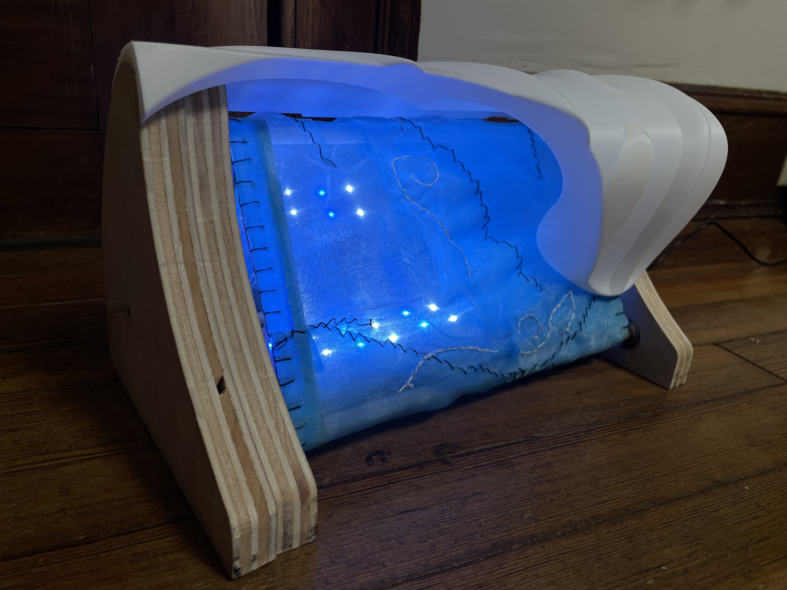
Final Project: Cycling Wave Lamp
This final project was open ended, tasking us to apply the wide range of fabrication techniques we have learned into a unique illuminated design.
Materiality, timeline, scale, and function were all up to personal interpretation which demanded a well thought out project design.
After feeling uninspired by inital project concepts, I watched the movie Point Break which reminded me of my family's love of surfing. I felt inspired to create a wave themed lamp that could rotate to simulate how water moves up the face of a wave.
One design element I knew I wanted to include was the tube as the water curls over itself, a dream ride for most surfers.
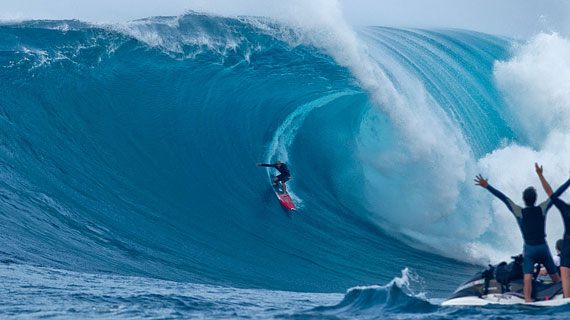
Full Assembly
Wave Top
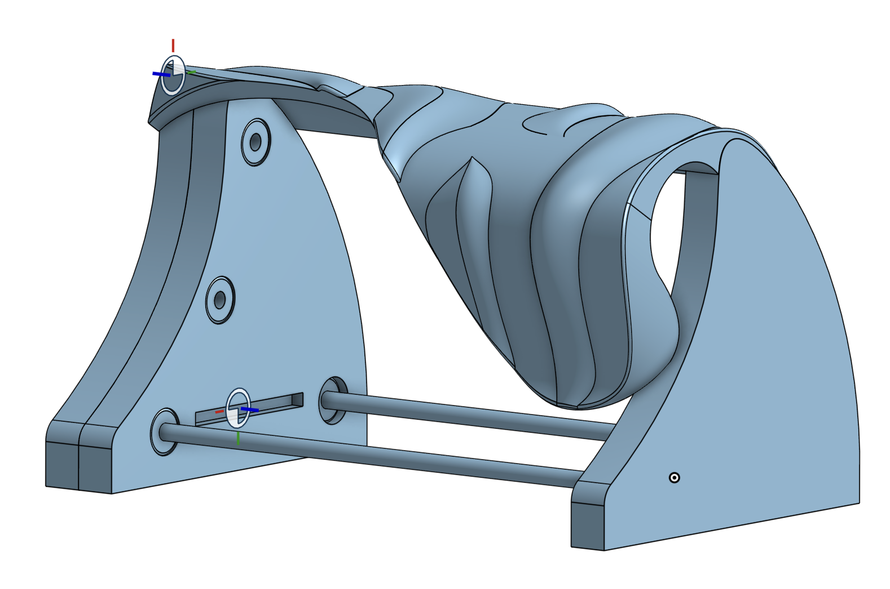
I modeled everything in Onshape, carefully dimensioning everything to fit together once physically fabricated.
The full assembly contained many components including 3 triangular side pieces, rotating dowels, bearings, and the wave top. The two pieces on the left side combine leaving an interior pocket to hide the power cord wiring.
I created the wave top by projecting curves into a 3D space and creating lofted surfaces up to the lines. I created solids from enclosed surfaces which I then combined all together using the boolean features.
Due to the height of this 3D print, I had to split the piece into two smaller pieces. I used a curved line that followed the existing lofted surfaces to hide this join. I also made each piece into a shell in order to let some light through and shorten print time.
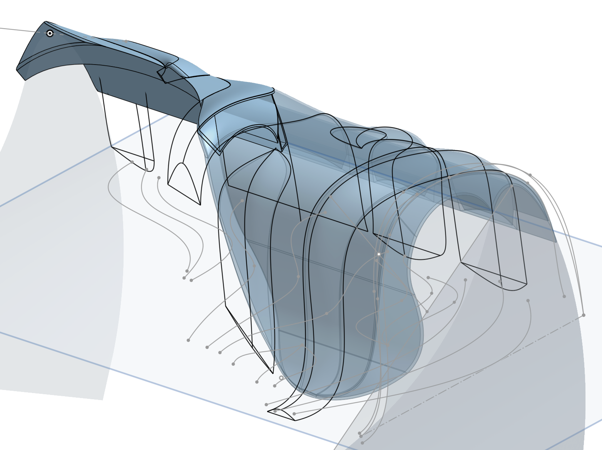
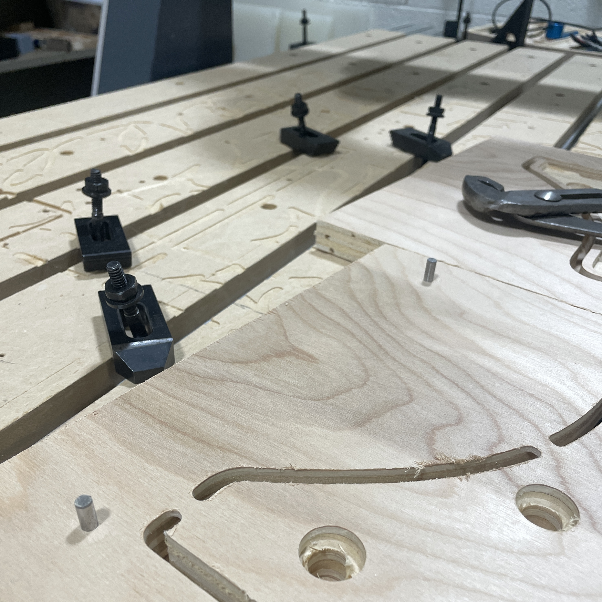
The side walls of the wave were created from 3/4in plywood cut with the CNC router using a 1/4in endmill. Partial depth pockets were included to hold the bearings that the dowels spin in.
For double sided pieces, I included registration holes to align the cuts on opposite sides.
The copper circuits were also cut with the CNC router using a 1/8in V-bit to separate electrical traces. A jig is fixed to the spoil board in order to align the copper plate for cutting.
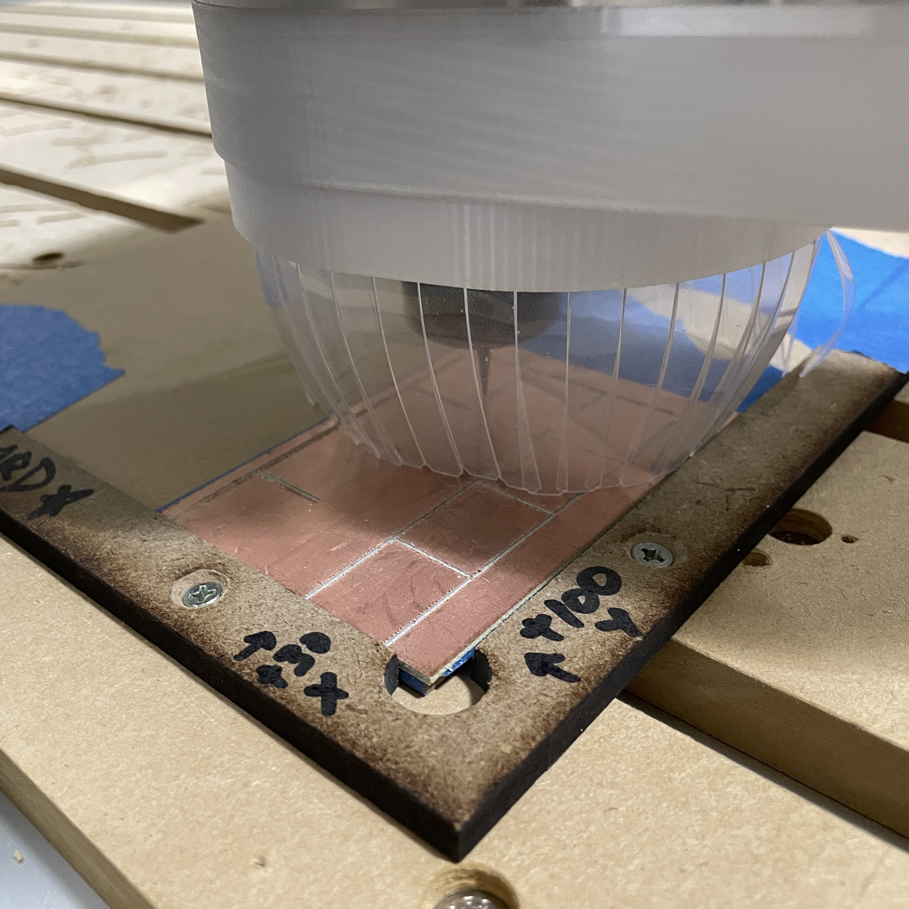
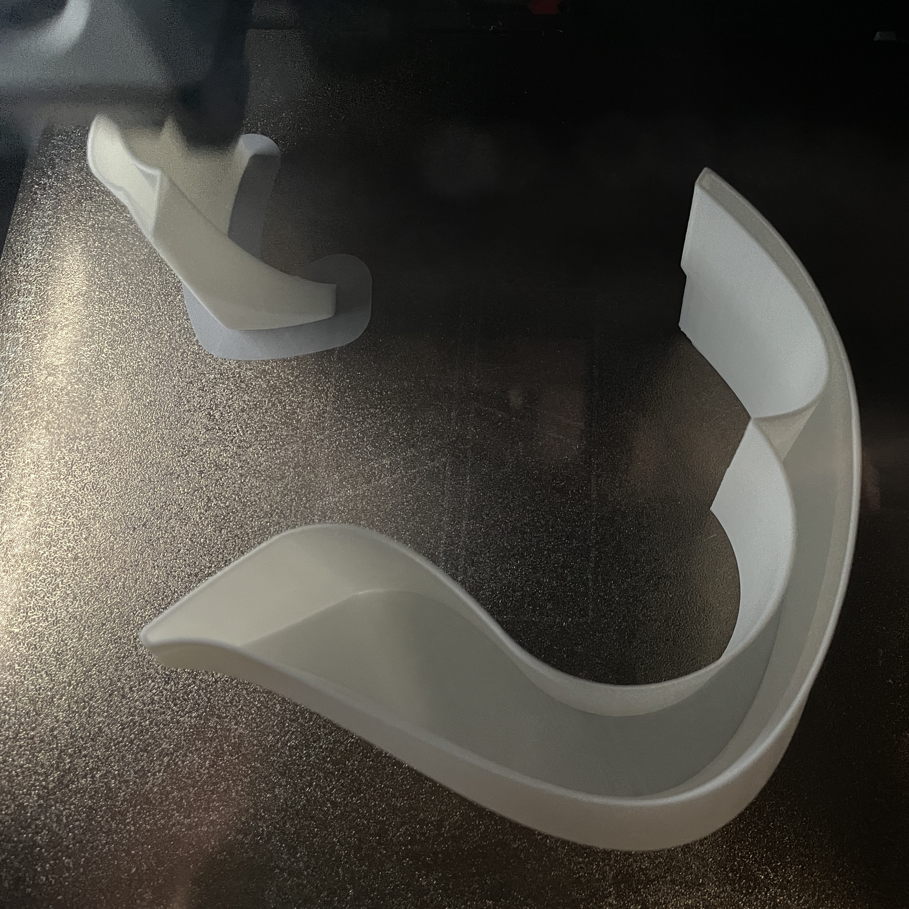
The wave top was fabricated in two separate pieces due to exceeding the maximum print height. Print time was shortened by making it a shell rather than a solid, and gradual slopes meant no additional supports were needed.
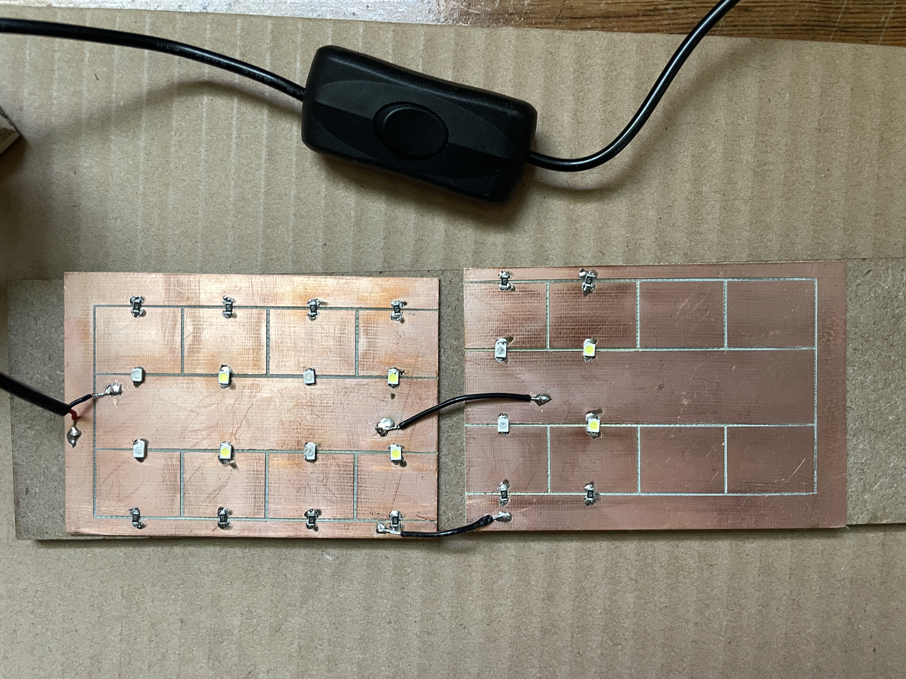
The CNC routed circuit was then prepped with isopropyl alcohol before soldering. LEDs and resistors were placed in parallel with the positive bus around the edges and negative bus in the center. These elements were attached using solder paste and a heat gun.
The power cord was fitted with an inline switch before being attached to the positive and negative channels. Two additional wires were added to connect the two copper plates into one circuit.
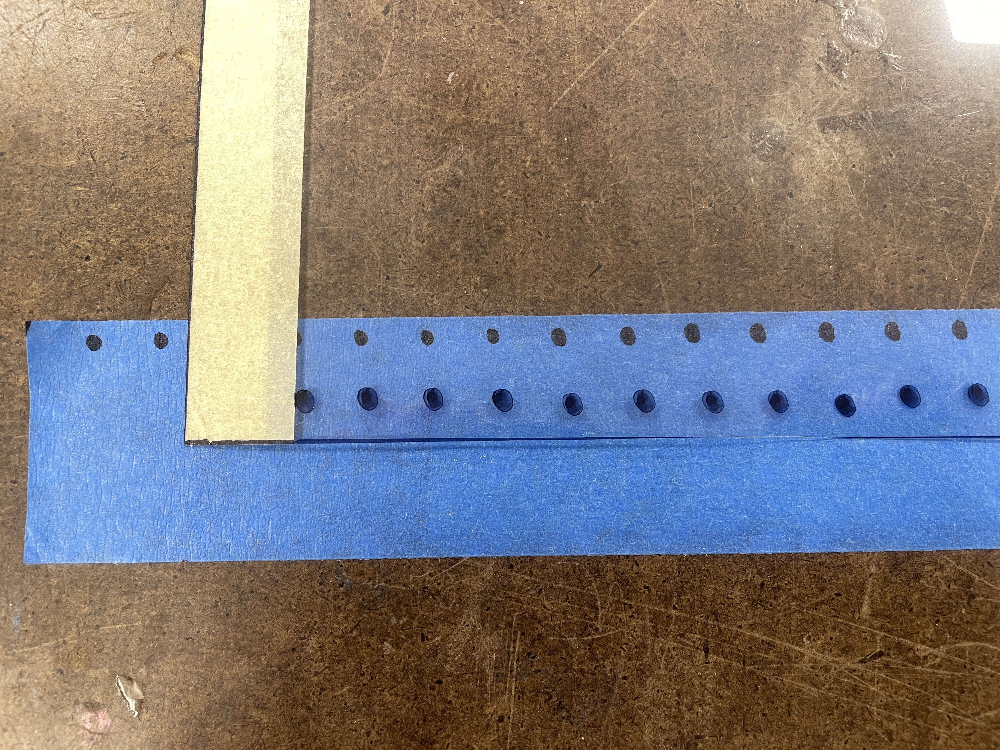
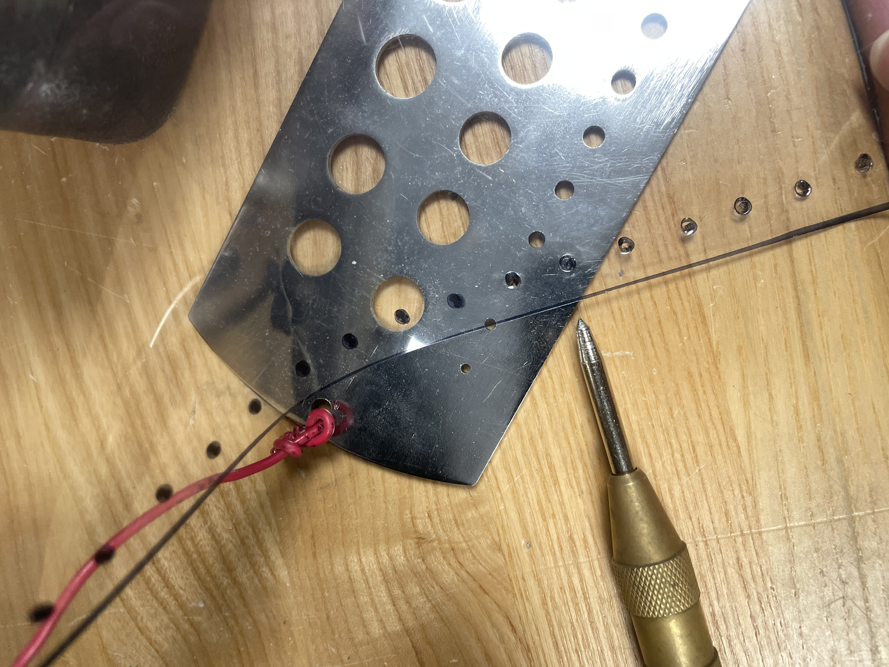
To create the water, I chose a contrasting medium and decided to use fabric. I used a lightweight, sheer organza fabric attached to clear mylar to give it structure.
I used blue tape to mark out evenly placed dots that I to trace onto the mylar. Using a center punch tool, I made holes in the clear film that I could use to sew in the fabric.
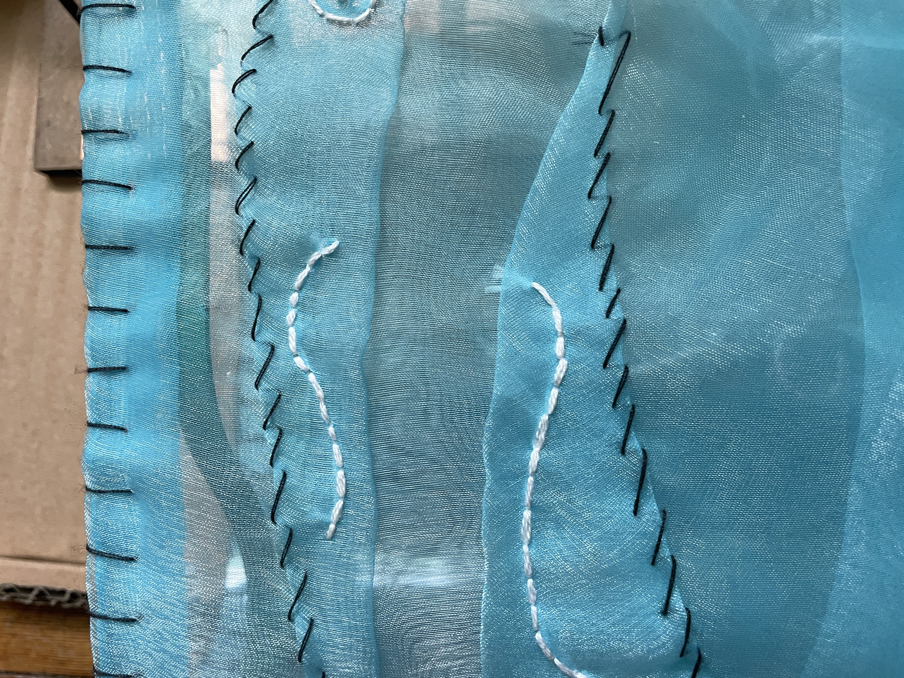
I used a blanket stitch to attach the blue organza to the hole-punched mylar. This, combined with folded edges ensured the thin fabric wouldn't fray and unravel.
I created detailing by folding pleats and securing them with a whipstitch. Additional detailing was added by backstitching with white embroidery thread.
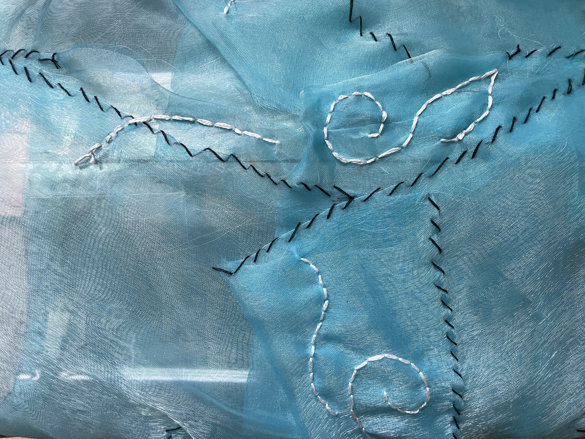